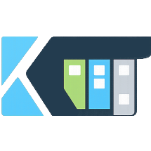

KanTrack is a privacy-first, local-only Kanban board built for focus and clarity. No accounts. No cloud. No distractions. Just you and your work.
| Tasks, notes, tags, history | localStorage + IndexedDB -> your browser only |
| Notebook pages & images | IndexedDB -> your browser only |
| UI preferences | localStorage -> your browser only |
| Encryption keys | Never stored -> derived per-session from your password |
Nothing is sent to any server. KanTrack has no backend, no accounts, and makes no network requests. All storage is local to your browser.
script-src 'self') blocks inline scripts and javascript: URL execution.kantrack.json workspace files.kantrack.json exports are plain JSON. Use the encrypted export for sensitive data.We cannot protect your data if your device is compromised. That is an honest limitation we cannot engineer away.
Found a security issue? Do not open a public issue.
Contact: general@bosslesstechindustries.com
KanTrack is free and always will be! No ads, no accounts required, no tracking. We built it this way on purpose, because we believe your workspace is yours alone.
Keeping KanTrack alive has real costs, the domain, the infrastructure, and the time it takes to build things right. There are no investors or corporate backing behind this. It's just us, building something we believe in. If KanTrack helps you stay organized and clear-headed, a coffee goes a long way.
Your support helps fund the next chapter of KanTrack:
All of this is optional. Local Mode stays free and fully featured, forever. No paywalls on existing features, ever.
Your support also helps fund our other open projects. See what we're working on here.

KanTrackFour columns: To Do, In Progress, On Hold, and Done. Move tasks between them by drag and drop.
High, Medium, and Low priority with colour tinting. Columns auto-sort so the most important work rises to the top.
Due date indicators on cards with clear overdue and due-today states so nothing slips past you.
Colour-coded labels with a preset palette or custom hex. Pin your most-used tags for fast assignment.
Full-text search with tag and column filters. Find anything immediately across your entire board.
Small, Medium, and Large card display sizes. Your preference persists across sessions.
Bold, italic, and strikethrough formatting. Paste images directly, stored locally and viewable in a full-screen zoom viewer.
Chronological log of every edit and deletion. Full history of how a task evolved, always visible inside the task.
A collapsible mini kanban board inside any task. Same four columns, drag-and-drop between states, with a live done/total counter on the parent card.
Per-task time tracking with quick-add and quick-remove controls directly inside the task detail view.
Double-click the task title to rename it inline without opening a separate form.
Save keeps the task open for multi-step edits. Save & Close saves and dismisses in one action.
Board - controls at the bottom of the board
| Format | What's included | Importable? |
|---|---|---|
.kantrack.json full |
Everything - tasks, tags, notebook pages & images, clocks | Yes - merge or replace |
.kantrack.json lite |
Same as full, without embedded images (smaller file) | Yes - merge or replace |
.kantrack.enc |
Full backup, passphrase-encrypted | Yes - passphrase required |
.html |
Read-only visual snapshot of the board | Yes (board data only) |
Task .pdf |
Single task with notes & history | No |
Notebook - controls inside the notebook sidebar
| Format | What's included | Importable? |
|---|---|---|
Folder / All pages .zip |
Pages & images, folder structure preserved | Yes - via notebook import button |
Page .pdf |
Single note page | No |
On import, Merge adds new items without touching existing ones. Replace overwrites everything - an automatic lightweight backup is downloaded first.
Built by BTi — Bossless Tech Industries, a small studio with one governing idea: software should serve the person using it.
KanTrack is an app, not a trap.